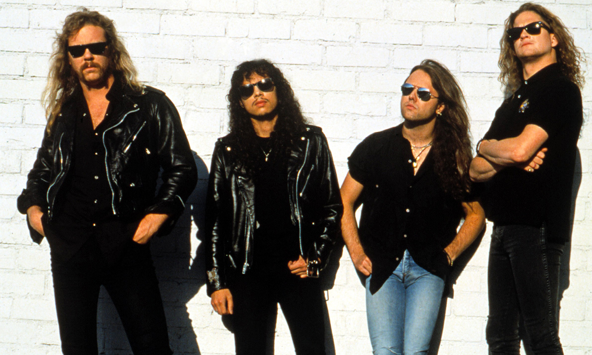
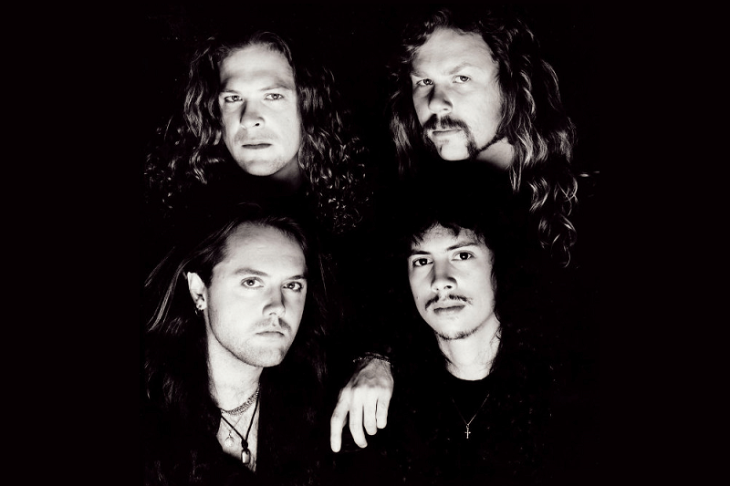

A The Black Album in Black & White egy különleges fotókönyv, amely a Metallica legismertebb albumának, az 1991-es Metallica (közismert nevén a Black Album) korszakát mutatja be. A kiadvány ritka és korábban nem publikált fényképeken keresztül enged betekintést a zenekar életének egyik legfontosabb időszakába.
A könyv képei a Black Album felvételeinek időszakát, a turnékat, a kulisszák mögötti pillanatokat és a zenekar mindennapjait örökítik meg. A fotók különlegessége, hogy nemcsak a színpadi látványt mutatják be, hanem a tagok személyesebb oldalát is.
A Black Album a Metallica történetének legsikeresebb lemeze lett. Olyan dalok találhatók rajta, mint az Enter Sandman, a The Unforgiven, a Nothing Else Matters vagy a Sad But True. A lemez világszerte több tízmillió példányban kelt el, és a heavy metal egyik legismertebb albumává vált.
A fotókönyv célja nem csupán az album ünneplése, hanem annak bemutatása is, hogy milyen időszak állt a hatalmas siker mögött. A képek segítségével a rajongók közelebb kerülhetnek a zenekar történetéhez és a Black Album elkészítésének korszakához.
A The Black Album in Black & White a Metallica egyik legérdekesebb kiadványa, amely ötvözi a zenei történelmet és a fotóművészetet. A könyv különleges emléket állít annak az albumnak, amely végleg a világsztárok közé emelte a zenekart.


